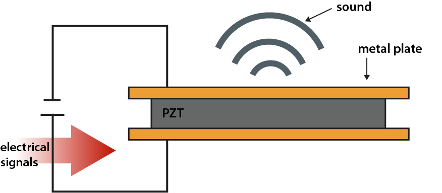
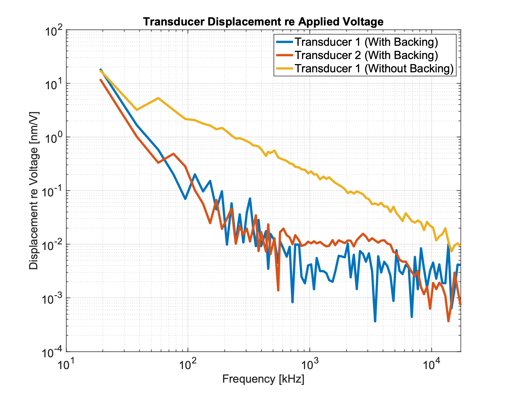
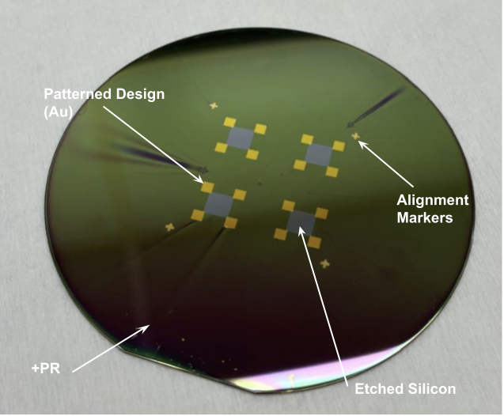
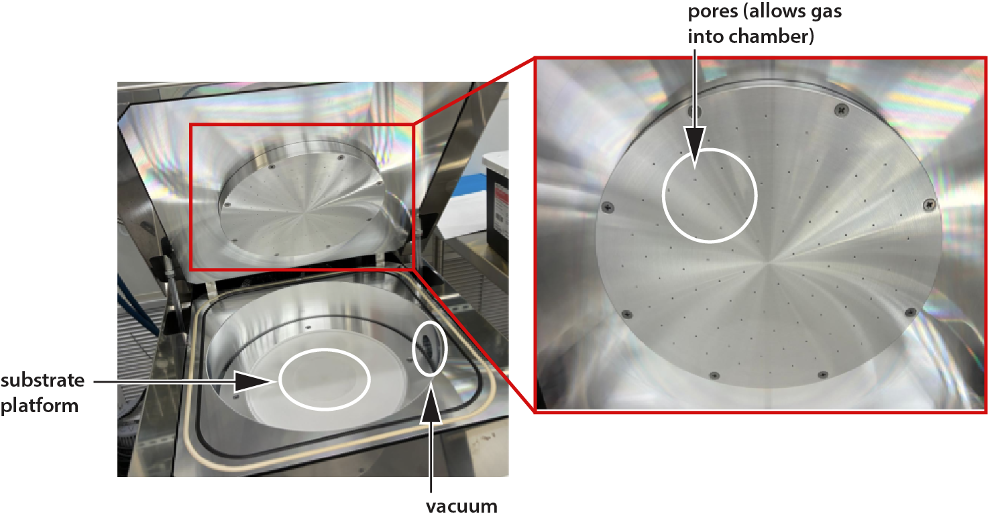
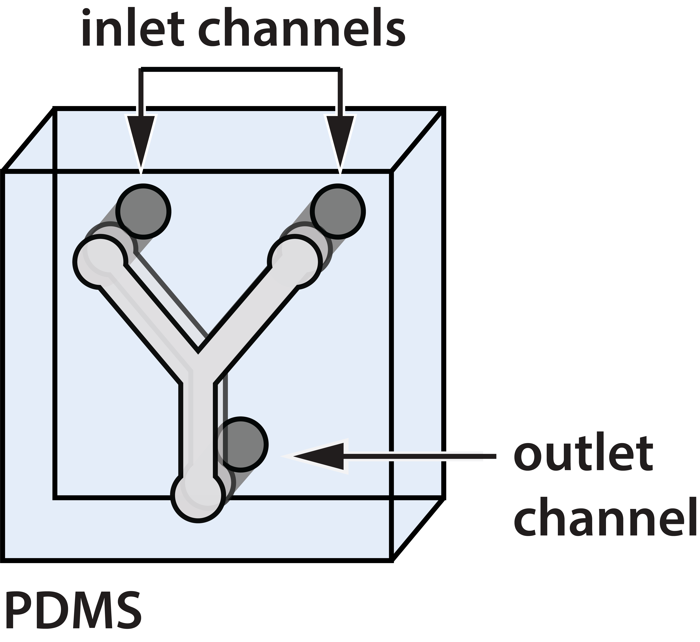
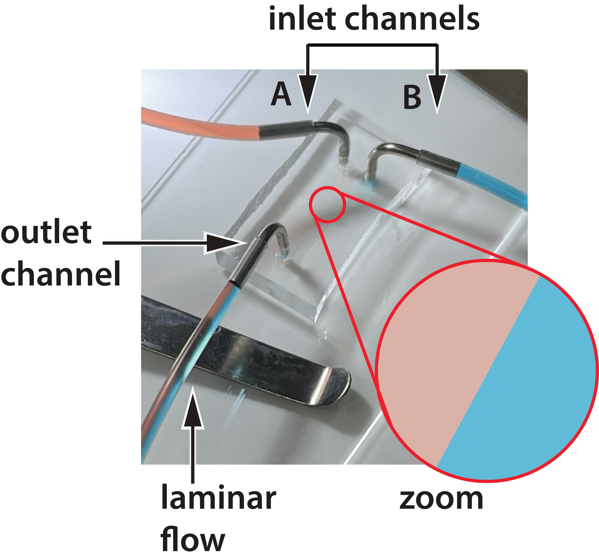

As screen-based devices become increasingly integrated into daily life, the ways in which users interact with audio are evolving alongside them. Prolonged use of in-ear headphones can be uncomfortable, isolating, and poorly suited for continuous or ambient interaction with digital systems. These limitations are especially relevant for emerging wearable technologies– such as smart glasses and assistive devices– that require audio interfaces capable of long-term use without occluding the ear canal or disconnecting users from their surroundings.

ES276, Microelectromechanical Systems, is a graduate-level course offered at Harvard that covers the design, fabrication, and application of MEMS devices. Motivated by limitations observed in existing audio and wearable technologies, I explored a potential solution for my final project. Building on prior work modeling sound transmission through mechanically coupled pathways, I designed and fabricated a MEMS-based transducer that operates at a fraction of the size and power consumption of conventional bone-conduction devices. This page documents the final project and the design rationale behind the work, along with the cleanroom fabrication skills developed throughout the course.
ABSTRACT
This work presents the design, fabrication, and evaluation of a MEMS-based transducer for cartilage-mediated sound transmission.
Rather than relying on traditional air conduction, the proposed device delivers audio through mechanical excitation of the outer ear cartilage, enabling sound delivery without isolating the user from their surroundings.
The transducer employs a layered structure consisting of patterned conductive electrodes sandwiching a lead zirconate titanate (PZT) stack, encapsulated within a compact housing to protect the device from external elements.
Standard MEMS fabrication techniques were used to create the device at millimeter scale.
Experimental results demonstrate the feasibility of cartilage-mediated excitation while highlighting key trade-offs between membrane flexibility, encapsulation, and acoustic efficiency. Together, these findings establish a proof-of-concept for compact, low-profile conductive audio interfaces suitable for future wearable applications.

PROBLEM STATEMENT
People are spending more time on screens than ever before– approximately seven hours per day globally, and close to nine hours per day among Gen Z users.
At the same time, over 2.2 billion people worldwide live with visual impairment, increasing reliance on audio as a primary interface for interacting with technology.
Despite this growing demand, most consumer audio solutions remain centered on in–ear headphones, which can be uncomfortable for extended use and poorly suited for continuous, ambient interaction.
Traditional conductive headphones offer an alternative by transmitting sound through mechanical vibration, but existing commercial devices typically rely on electromagnetic actuation involving coils, magnets, and moving masses.
These systems tend to be bulky, mechanically complex, and power-intensive, limiting their suitability for compact, ear-mounted or discreet wearable devices.

These limitations motivate the exploration of non-occluding, mechanically coupled sound interfaces that can be miniaturized, simplified, and integrated more naturally into wearable form factors.
DESIGN RATIONALE
The goal of this project was to develop a compact intermediary transducer capable of transmitting sound through a cartilage-mediated pathway.
Unlike traditional bone-conduction systems that depend on rigid contact with the skull, this approach targets the outer ear cartilage, which provides a softer, more compliant interface while still supporting mechanical wave propagation.
Inspired by low-power piezo buzzers/speakers used in prior projects, I explored the feasibility of miniaturizing this actuation mechanism using MEMS fabrication techniques.
Piezoelectric materials offer several advantages for this application: they enable direct electrical-to-mechanical transduction without moving parts, can be fabricated at small scales, and are compatible with low-profile, planar device architectures.

The final design implements a layered structure consisting of stacked piezoelectric elements sandwiched between patterned conductive membranes.
This configuration was chosen to maximize membrane displacement while maintaining design and mechanical robustness.
FABRICATION
With a defined transducer design, the next steps involved translating this layered design into a physical product through standard MEMS fabrication processes.
Detailed fabrication procedures are documented in the photolithography section under CLEANROOM & TECHNICAL SKILLS;
here, the emphasis is placed on fabrication decisions most relevant to device performance.

Fabrication began with the photolithographic patterning of conductive electrodes on rigid substrates.
Both silicon and quartz were explored to evaluate trade-offs between mechanical stiffness, flexibility, and compatibility with downstream characterization.
Gold electrodes were deposited on both substrates to serve as electrical contacts for voltage-driven actuation of the piezoelectric layer.
While silicon provided a mechanically stable and robust platform for coupling to the human face, quartz was selected for the opposing electrode plate due to its anticipated flexibility that would maximize vibrational displacement.
Next, the patterned substrates formed the structural and electrical foundation of the layered transducer assembly.
Four 2 x 2 mm lead zirconate titanate (PZT) elements were carefully soldered between the conductive layers to form the active transduction stack.

To improve wearability and provide electrical isolation, the assembled transducer was encapsulated in a custom housing that was designed to preserve alignment of the layered stack while allowing sufficient clearance for membrane motion, ensuring efficient vibration and sound transmission while protecting the fragile internal components. Finally, a thin coat of polydimethylsiloxane (PDMS) was layered on top of the surface of the silicon plate, selected for its biocompatibility and mechanical compliance, to protect the device and enhance conductive coupling.
RESULTS & DISCUSSION
Following assembly and encapsulation, device performance was evaluated using laser Doppler vibrometry (LDV) to quantify membrane displacement across frequency. Electrical contact between the electrodes and the piezoelectric elements was carefully established to enable voltage-driven actuation. Measurements were conducted under two backing configurations: (1) both electrode plates fabricated from silicon, and (2) a mixed configuration with a silicon top plate and a quartz bottom plate. These configurations were used to isolate the effects of structural constraint and substrate compliance on mechanical output.

LDV measurements were taken from both the PDMS-encapsulated surface and the rigid substrate side of the transducer.
To enable measurements on the bottom electrode plate, a small access hole was drilled into the housing to expose the interior surface of the device without disturbing the assembled stack.
The results demonstrated that membrane flexibility plays a critical role in transducer performance.
While PDMS encapsulation introduced substantial damping that reduced overall output, measurable vibration was still observed in configurations with the quartz back plate.
These findings highlight a fundamental design trade-off: silicon may improve structural robustness, but at a cost of vibrational displacement and acoustic efficiency of the device.
Additionally, the small piezoelectric elements required relatively high driving voltages (approximately 10 V) to achieve measurable displacement.
This suggests that future iterations would benefit from thicker or stacked PZT layers to reduce voltage requirements.

Overall, the results validate cartilage-mediated sound transmission as a viable pathway for non-occluding wearable audio, while also identifying clear directions for optimization in material selection, encapsulation strategy, and piezoelectric stack geometry.
FINAL ASSEMBLY OVERVIEW
Drag to rotate, pinch or scroll to zoom.
The final transducer assembly and cartilage-mounted housing were modeled in Fusion 360 to integrate mechanical alignment, electrical routing, and wearability considerations into a single design. The interactive 3D model provides a complete view of the assembled device, illustrating how the layered transducer stack interfaces with the housing and how the system is intended to mechanically couple to the outer ear cartilage.
CLEANROOM & TECHNICAL SKILLS
PHOTOLITHOGRAPHY
Photolithography is a microfabrication technique used to pattern features on a substrate using light-sensitive photoresist materials.
The process involves coating the substrate with photoresist, exposing it to UV light through a photomask, and developing the exposed resist to create a patterned layer.
This patterned resist can then be used as a mask for etching or depositing materials onto the substrate.
For the final project, this technique was employed to create gold electrodes on both silicon and quartz substrates.

Process Steps:
1. Substrate Preparation:
The substrate (silicon or quartz) is thoroughly cleaned in each solvent bath for 5 minutes in the following order: methanol, isopropanol, and acetone.
The washed substrate is then dried using a nitrogen gun to remove any residual moisture.
Once the substrate is cleaned, photoresist coating can begin.
LOR 3A is spun as the bottom layer to form an undercut profile, followed by a top layer of S1805 positive photoresist.
Both resists are soft-baked between layers to evaporate solvents and improve adhesion.
2. Mask Alignment and Exposure:
The substrate is carefully relocated to a maskless aligner (µMLA) and secured in place.
The desired electrode pattern is aligned using the aligner software interface, ensuring precise positioning on the substrate.
Once aligned, the substrate is exposed to UV light at a dose of approximately 400 mJ/cm2.
3. Development:
After exposure, the sample is submerged in MF319 developer for around 50 seconds to remove the exposed photoresist, during which partial dissolution of the LOR layer produces a lateral undercut beneath the patterned openings.
This undercut is critical for preventing metal continuity along the resist sidewalls during deposition.

4. Metal Deposition:
Following development, metal electrodes were deposited using electron-beam evaporation (EE-5).
A thin chromium adhesion layer (∼0.01 nm) was first deposited to promote adhesion to the substrate, followed by a gold layer (∼0.18 nm) to serve as the primary conductive electrode material.
Deposition was performed normal to the substrate surface to preserve the resist undercut profile.
5. Lift-off:
The deposited pattern is revealed through lift-off using a combination of PG Remover and acetone.
The solvent dissolves the remaining photoresist stack, removing unwanted metal and all remaining photoresist.
ETCHING
Etching is a microfabrication technique used to selectively remove material from a substrate to define structural features that cannot be achieved through deposition alone.
In this demo exercise, etching was employed to remove exposed regions of the silicon substrate following photolithographic patterning, creating recessed areas that enable subsequent material deposition and mechanical compliance within the device structure.
Dry etching was performed using reactive ion etching (RIE), which combines chemical and physical mechanisms to achieve anisotropic feature profiles with controlled depth.
In our case, etching was carried out using a Samco RIE system following completion of lift-off.
A second photolithography step was first used to pattern the negative of the desired etch regions, ensuring that protected areas of the substrate remained intact during material removal.
The exposed silicon regions were then etched to a target depth to define the underlying device geometry.

Process Steps:
1. Etch Mask Preparation
Following completion of lift-off, an additional layer of positive photoresist (S108) was applied to the substrate to define the etch pattern.
The substrate was cleaned using methanol, isopropanol, and acetone, spin-coated with S108 at 3500 rpm, and soft-baked at 115 °C for 60 seconds.
The pattern was exposed using a maskless aligner (µMLA) at an exposure dose of approximately 170 mJ/cm2, followed by development in MF319 developer for 50 seconds to reveal the etch mask.
2. Reactive Ion Etching (RIE)
With the etch mask defined, silicon etching was performed using a reactive ion etching system (RIE-15).
A preset recipe was selected to achieve anisotropic etching with controlled depth.
The gas mixture consisted of SF6, O2, and Ar, where fluorine radicals from SF6 chemically etched the silicon, oxygen improved selectivity and resist removal, and argon ions contributed to physical sputtering.
The process was conducted at an initial and process pressure of 20 mTorr, with an RF power of 70 W, and a total etch time of 1 minute.

3. Post-Etch Characterization:
Following etching, the remaining photoresist was removed, revealing the etched silicon features.
The resulting process achieved an etch depth of approximately 2 µm, producing the desired recessed geometry while preserving the integrity of the surrounding structures.
Optical inspection confirmed successful pattern transfer and alignment with the previously defined electrode features.
MICROFLUIDICS
Microfluidics is a fabrication approach used to manipulate small volumes of fluids within microscale channels, enabling precise control over fluid transport, mixing, and interaction.
In this project, microfluidic fabrication techniques were used to create a polydimethylsiloxane (PDMS)-based device with embedded channel networks, demonstrating the complete workflow from photolithographic master fabrication to soft lithography and polymer casting.

The microfluidic device in this demo consisted of a Y-shaped channel geometry designed to merge multiple inlet streams into a single outlet channel. Fabrication began with the creation of a negative relief master on a silicon wafer using SU-8 photoresist. This master was subsequently used as a mold for PDMS casting, resulting in a flexible, transparent microfluidic device suitable for fluidic experimentation.
Process Steps:
1. Master Mold Fabrication (SU-8 Photolithography)
A silicon wafer was first cleaned using sequential solvent rinses in methanol, isopropanol, and acetone, each for 5 minutes, to remove surface contaminants.
SU-8 3025 negative photoresist was then spin-coated at 3000 rpm, producing a resist thickness of approximately 25 µm.
The coated wafer was soft-baked at 95°C for 15 minutes to evaporate residual solvents.
The channel pattern was transferred to the SU-8 layer using a mask aligner (SUSS Microtec) and a photomask containing the desired design.
Exposure was performed at the h-line (410 nm) wavelength, followed by a post-exposure bake at 65°C for 1 minute and 95°C for 4 minutes to crosslink the exposed regions.
The wafer was subsequently developed in SU-8 developer for 5 minutes, revealing raised channel features that served as the master mold.
2. PDMS Casting and Curing
Polydimethylsiloxane (PDMS) was prepared by mixing the base and curing agent at a 10:1 ratio and poured over the SU-8 master mold within a petri dish.
The assembly was placed in a vacuum chamber for approximately 1 hour to remove trapped air bubbles and ensure complete filling of the channel features.
The PDMS was then cured in a laboratory oven at 65 °C overnight, forming a solid elastomeric replica of the microfluidic channels.
3. Device Release and Plasma Treatment
After curing, the PDMS layer was carefully trimmed around the patterned region to isolate individual devices and released from the master mold.
The PDMS block was then treated with oxygen plasma for 30 seconds, with the patterned surface facing upward.
A glass coverslip was treated under the same plasma conditions to activate both surfaces. Immediately following plasma exposure, the PDMS and glass were brought into conformal contact and gently pressed together to form an irreversible bond, sealing the microfluidic channels.
The bonded device was then placed in an oven at 65°C for 5 minutes to strengthen the plasma-induced bond.

A flow-control pump was connected to two syringes containing water dyed with red food coloring (inlet A) and blue food coloring (inlet B).
At higher flow rates, laminar flow was observed, as evidenced by the distinct red and blue streams traveling through the channel and exiting the outlet tubing without visible mixing.
ACKNOWLEDGEMENTS
This project was completed as part of ES276 with guidance from Fawwaz Habbal and Kamar Reda.
Fabrication was supported by the lab facilities at the Harvard Center for Nanoscale Systems, with experimental validation enabled by support from the Nakajima Lab at MEE.
1. Adafruit Industries, “Bone Conductor Transducer with Wires - 8 Ohm 1 Watt,” Adafruit.com, 2016. https://www.adafruit.com/product/1674?gad_source=1&gad_campaignid=21079267614&gbraid=0AAAAADx9JvQNHE6Hm2OAUGkUgrYI0IEaS&gclid=Cj0KCQiAnJHMBhDAARIsABr7b84jwn15CrzJRMQWKaY5PmvqOH6bu3KhJcXuBtA3bNDhVM-C7gLNya4aAoK2EALw_wcB.
2. A. Vazquez Carazo and A. Malla, “Bone-conduction hearing-aid transducer having improved frequency response,” 2006
REFERENCES